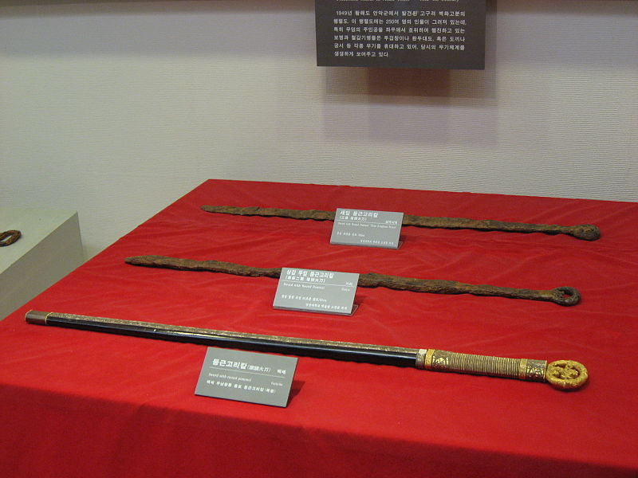
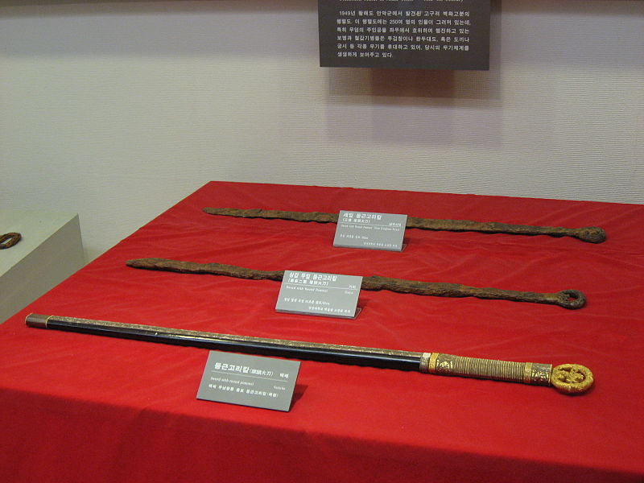

Historia del Haidong Gumdo: La leyenda del Samurang
El blandir la espada es una antigua tradición en los países del lejano oriente, en especial China, Corea y Japón. De éste último, se conocen los samuráis, sus katanas y su filosofía sobre el honor. Mas existe en Corea un arte marcial no menos interesante que el bushido japonés, “el arte de blandir el sable hacia el oriente en las playas sureñas”, o como lo llaman en su tierra de origen: Haidong Gumdo.
Los inicios en tiempos antiguos
El principio del Haidong Gumdo se remonta a los días en que Corea se dividía en tres regiones:
Koguryo, Paekje y Silla, periodo conocido como “De los Tres Reinos” (56 a.C.-668 d.C.). Atravesado
por el río Amnokkang, Koguryo era reconocido por su tradición marcial; su gente era tan fuerte y
comprometida que el reino creció con rapidez y concentró un gran poder.
Fue entonces que el tercer general de la dinastía de Koguryo, Yu Yu, formalizó una técnica de
entrenamiento – basada en el manejo del sable – para los soldados o Samurang. Éstos, a su vez,
ayudaron al rey Kwang Kae To a ampliar las fronteras del reino e incluir las tierras de
Paekje; de esta manera, Koguryo alcanzó su máximo desarrollo entre el 371 y 384 d.C.
Sin embargo, la época de esplendor no duró mucho, debido a que China comenzó a invadir la
península. Los soldados coreanos enfrentaban las numerosas incursiones invasoras con gran éxito,
hasta que la dinastía de Silla unificó la península coreana en 668 d.C., con la ayuda de la
dinastía Tang de China.
Posteriormente, los guerreros se encontraron sin el apoyo gubernamental; como resultado, sufrieron
un periodo de decadencia. Durante este tiempo, tanto el clima político como el aristocrático
hicieron que las artes marciales fueran muy impopulares. Se prohibió su práctica por el riesgo
que implicaba para las clases privilegiadas; en su lugar, la ciencia y la tecnología acapararon
la admiración del público. Fue así que algunos de los Samurang se retiraron a la montaña de
Pecktu, donde continuaron trabajando su arte en secreto. El esfuerzo de uno de ellos – el maestro
Sul Bong, enérgico protector de la tradición marcial – permitió crear el primer doyang o espacio
de entrenamiento, lugar en el que adiestraban a los estudiantes para ser excelentes guerreros.
Los mejores fueron llamados Haidong Mussa; que eran enviados para fundar nuevas escuelas en
distintos puntos de la península y transmitir sus conocimientos.
El sable, arma de guerreros por naturaleza
Los coreanos denominan gum a la espada de un filo; fue tan importante para las artes marciales, que durante el período “De los Tres Reinos”, la gente honraba y respetaba a quienes sabían utilizarla, incluso varios de losgenerales y líderes del país llegaron a ser diestros en su manejo. Las primeras espadas de metal encontradas en la región – a las que se hace referencia en viejos escritos– datan de la época de Paekje (18 a.C.-668 d.C.), el cual tuvo estrecho contacto con Japón. Según algunos expertos, en aquel entonces, Corea exportó a esa nación algunas variedades de espadas de acero y bronce. Con el transcurso del tiempo, en Corea se perfeccionaron las técnicas de forja de espadas; muchas familias dedicadas a ello transmitieron sus conocimientos de generación en generación para mantener viva la costumbre. Muchos de los instructores y practicantes de las artes coreanas aprendieron a blandir el sable directamente de grandes maestros, quienes forjaron el Haidong de acuerdo con el carácter coreano.
Los guerreros de los tiempos modernos
Hoy en día, la finalidad de practicar Haidong Gumdo no es la de formar soldados que pelearán hasta
la muerte por sus ideales, sino ejercitar el cuerpo, la mente y el espíritu para ser mejores personas.
Claro que aún existen algunos aspectos que han perdurado a través de la historia; uno de ellos es el
uso del dobok (uniforme), consiste en una casaca y un pantalón amplio negros. También está el doyang,
que puede ser cualquier lugar, desde una duela hasta un área verde, la condición es que sea un espacio
plano.
El sable sigue siendo su distintivo, por lo que los nuevos Samurangs usan tres tipos:
- De madera o mok gum, para hacer formas y pasos de combate.
- De bambú o chukto, para el combate libre o controlado.
- De metal o jin gum, el cual es manejado sólo por cintas negras mayores de 21 años, puesto que tiene filo. Con él se aprende a cortar objetos, desde madera, bambú maduro, pacas de paja, papel o fruta.
El entrenamiento del cuerpo
Dado que cualquier arte marcial requiere un enorme esfuerzo físico, es necesario acondicionar el cuerpo, lo que se logra al caminar, correr, estirarse o cualquier ejercicio constante; por supuesto, alimentarse bien es de gran importancia. Un entrenamiento típico –para todos los niveles– consta de cuatro partes:
- Cortes básicos. Se esgrime el sable en distintas maneras en el aire, es decir, se ejercita el control del arma en diversas circunstancias.
- Formas. Son representaciones de combates imaginarios contra varios rivales.
- Pasos de combate. También es una representación de combate, pero se realiza con un compañero y consta de pocos movimientos que incluyen golpes, inmovilizaciones o proyecciones.
- Combate. Son peleas contra una o varias personas con el fin de aplicar los conocimientos adquiridos a situaciones reales.
Pueden darse ocasiones en que los cortes de objetos figuren entre las demás actividades; no obstante, esta parte es exclusiva de las cintas negras.
El entrenamiento de la mente y del alma
Un guerrero no puede considerarse completo si sólo trabaja la materia, es necesario
trabajar la esencia. Para ello, cada sesión debe incluir un tiempo –antes, durante y
después– para el relajamiento y la meditación.
La relajación se lleva a cabo a través de posiciones que liberan la tensión de los
músculos o bien, movimientos pausados que ayudan a desarrollar agilidad, flexibilidad
y precisión. La meditación sirve para reflexionar sobre uno mismo, para sosegar el
espíritu cuando se encuentra inquieto, para cultivar la tranquilidad y la paciencia
como formas de vida. Este último aspecto es el principal componente para el dominio
del sable, dado que se busca fundir la mente y el cuerpo hasta convertirlos en una
sola unidad con dicha arma. Tal es la naturaleza del Haidong: lograr que los
movimientos del cuerpo sean parte de la espada y ésta, una extensión del cuerpo.
Si bien existe controversia respecto a qué arte marcial es más antigua o mejor, lo
cierto es que el Haidong, como cualquier otra disciplina, es un camino que aspira a
la rectitud, a la excelencia; busca moldear personas generosas, corteses y dispuestas
a socorrer al que lo necesita.

HISTORIA Y DESARROLLO
La espada, a la que los coreanos denominan gum (aunque este término también se puede
escribir geom o kum), fue tan especial para las artes marciales de este país, que durante
el período llamado de los Tres Reinos (56 a.C.-668 d.C.), la gente honraba y respetaba a
quienes sabían manejar esta arma. De hecho, varios de los generales y líderes del país
llegaron a ser diestros en su manejo.
Las primeras espadas de metal que existieron en Corea, y a las cuales se hace referencia
en escritos, datan de la época de la dinastía Paekche (18 a.C.-668 d.C.), que fue la clase
dirigente de la antigua Corea, la cual tuvo estrecho contacto con Japón. Según algunos
expertos, fue en aquel tiempo cuando Corea exportó algunos de sus tipos de espadas en
acero y bronce a Japón.
Con el transcurso del tiempo, en Corea se fueron perfeccionando las técnicas de fabricación
de espadas, e incluso un buen número de familias dedicadas a las artes marciales
transmitieron sus conocimientos de generación en generación. Muchos de los instructores y
de quienes practican artes coreanas como el Kuk Sool han aprendido algunas de las destrezas
en el manejo de la espada directamente de grandes maestros, quienes han desarrollado sus
propias armas a imagen y semejanza de las tradicionales armas coreanas.
TIPOLOGÍA

 

Tradicionalmente hay unos quince tipos de espadas coreanas con algunos más conocidos que otros.
Elementos de la espada coreana incluyen: geomjip o vaina, más a menudo de laca; hyuljo o
más completa (la mayoría de las espadas coreanas genuinos no tienen una más completa);
hwando magos o collar, en ho o collar, kodeungi o protector de mano, un anillo- diseño de
pomo, borlas,. una ronda y ancho guardia diseñado espada, o una escalera de diseño loto.
Además hay práctica espadas de madera (mokgeom), metal espadas (shingeom) y práctica espadas
(Jingeom), la lista incluiría:
Para los estudiantes de artes marciales espada o formas de aprendizaje Geombeop / Geomsul práctica espadas de madera o mokgeom son los más utilizados, a continuación, los hechos de bambú carbonizado o Juk hacer-y, por último esponja compresión, simple o doble filo, con o sin estrías de sangre. Combinaciones de espada y lucha contra cuchillo se utilice hojas de plástico.